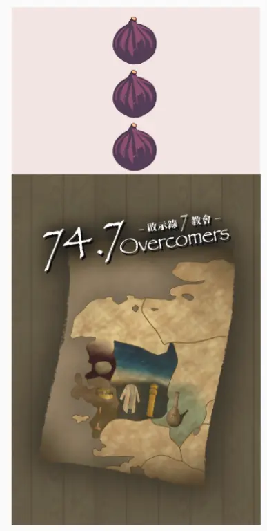
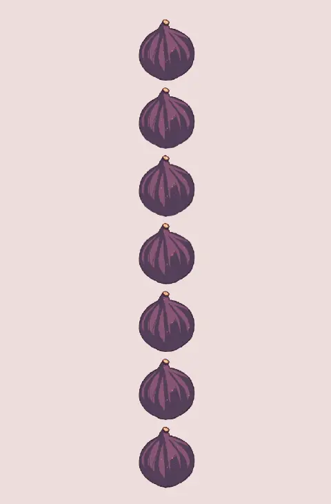

遊戲目標
玩家的勝利條件依其所持有的［身份牌］而定
- 老約翰（擇一達成即可）
- 所有教會和老約翰所持有的【福音】書信總數大於等於 2n 封（n 為遊戲開始時的教會數量）。
- 消滅所有羅馬帝國玩家。
- 七教會（與老約翰共同勝利）
- 不惜一切代價保護老約翰，並協助達成其勝利條件。
- 羅馬帝國（擇一達成即可）
- 在老約翰和教會達成勝利條件前，殺死老約翰，以鞏固政權。
- 誘導老約翰發起驗證並使驗證失敗（詳看獲勝條件）。
遊戲配件
四個種類，共 126 張牌
- 14張〔身份牌］
- 老約翰 x 1
- 教會 x 7
- 以弗所特殊技能－－愛心：回合開始前，可選擇回復自己一點生命值，或損失自己一點生命值並回復任一玩家一點生命值。
- 士每拿特殊技能－－受苦：若有人被損失生命值時，可決定是否代替對方損失生命值（上限為當前生命值）。
- 別迦摩特殊技能－－真理：約翰宣布驗證時，此［特殊牌］視為 2 張收下的【福音】書信。
- 推雅推喇特殊技能－－聖潔：手牌數上限不受生命值限制。
- 撒狄特殊技能－－實在：回合開始前，抽取任一玩家的一張手牌，變成自己的手牌。
- 非拉鐵非特殊技能－－見證：每次回合開始前，觀看牌堆頂X張牌（X為存活玩家數且不超過 5），可調整牌序並重新至於牌頂。
- 老底嘉特殊技能－－委身：若狀態為興旺，每輪「抽遊戲牌」階段，可抽 4 張［遊戲牌］，若為冷清，則為 1 張。
- 羅馬帝國 x 6
- 特殊技能：可在任意時候翻開［身分牌］，立即回滿 7 點生命值；若在回合開始前收到【放逐】書信，也可藉由翻開［身分牌］解除【放逐】效果，並在「抽遊戲牌」階段額外抽取兩張遊戲牌，繼續該回合。
- 14張〔生命值牌］：共7點生命值
- 以［身分牌］蓋住玩家當前損失的生命值量。
- 透過［身分牌］與〔生命值牌］的擺放方式顯示玩家的狀態：平行擺放代表冷清，垂直擺放代表為興旺。

冷清狀態、3點生命值興旺狀態、5點生命值 - 91張〔遊戲牌］
- 每張同時具有〔行動牌〕效果和〔書信牌〕效果，依使用時機對應不同功能。
- 7張〔特殊牌］（七教會專用）
- 當玩家獲得並使用與自己對應的〔特殊牌］時，需將［身分牌］翻開，並將〔特殊牌］放置在［身分牌］旁邊。使用特殊牌後，玩家於往後每回合皆可使用［身分牌］的技能。
- 七教會各自對應一張專屬的［特殊牌］，列表如下：
- 以弗所（徐恩行）：燈臺
- 士每拿（沈以安）：冠冕
- 別迦摩（王子恩）：白石
- 推雅推拉（劉祥玲）：晨星
- 撒狄（葉景行）：白衣
- 非拉鐵非（魏渝昭）：柱子
- 老底嘉（許瑞甯）：眼藥
 身分牌背面
身分牌背面

生命值牌
生命值牌背
遊戲牌/特殊牌背
遊戲人數
參照下表，抽取等同於玩家人數的〔身份牌〕（建議7-14人）
| 玩家數 | 老約翰 | 七教會 | 羅馬帝國 |
|---|---|---|---|
| 3 (強烈不建議) | 1 | 1 | 1 |
| 4 (不建議) | 1 | 1 | 2 |
| 5 (不建議) | 1 | 2 | 2 |
| 6 (不建議) | 1 | 2 | 3 |
| 7 | 1 | 3 | 3 |
| 8 | 1 | 4 | 3 |
| 9 | 1 | 4 | 4 |
| 10 | 1 | 5 | 4 |
| 11 | 1 | 5 | 5 |
| 12 | 1 | 6 | 5 |
| 13 | 1 | 6 | 6 |
| 14 | 1 | 7 | 6 |
遊戲開始前準備
- 將未使用的教會［特殊牌］移除。
- 抽取〔身分牌〕，並根據身分，掃描並閱讀說明書上對應〔身分牌〕的故事文本。
- 每位玩家抽 5 張〔遊戲牌〕作為起始手牌。
- 每位教會與羅馬帝國的起始狀態為冷清，生命值為 5；老約翰為冷清，生命值為 7。
遊戲進行時
- 進行遊戲時，由老約翰開始，按逆時針方向以回合的方式進行。
- 即：每名玩家有一個自己的回合，一名玩家回合結束後，右邊玩家的回合開始，依次輪流進行。
回合流程（共五個階段）
1. 抽遊戲牌
2. 彼此交通
3. 出行動牌
4. 寄信中
5. 回合結束
- 遊戲階段1/5：抽遊戲牌
- 如果抽牌堆沒牌，出牌牌堆立刻重新洗牌成為新的抽牌堆。
- 遊戲階段2/5：彼此交通
- 依狀態決定交通次數。
- 興旺：可交通 2 次
- 冷清：可交通 1 次
- 交通方式：該回合玩家指定任一玩家，從對方手牌中隨機抽一張牌，並交出自己選擇的一張手牌作為交換（可與同一玩家重複）。
- 依狀態決定交通次數。
- 遊戲階段3/5：出行動牌
- 玩家可以視情況出的〔行動牌〕或〔特殊牌〕，數量不限。
- 〔行動牌〕使用完後放置到出牌堆。
- 〔行動牌〕共 9 類：
- 【差派天使】：使任一玩家的狀態提升至興旺。
- 【鑒察人心】：詢問任一玩家身分（回應方式依遊戲牌上的描述），被鑒察人心的玩家將此牌納入手牌中。不可對約翰使用，約翰不可用於其他玩家。
-
如果你是
羅馬帝國：回答「我會繳稅給凱撒。」
教會：回答「願你平安。」 -
如果你是
羅馬帝國：回答「願你平安。」
教會：回答「我會繳稅給凱撒。」 - 【威脅】：使任一玩家的狀態降至冷清。
- 【挖角】：使任一玩家的狀態降至冷清，且自己的狀態提升至興旺。
- 【逼迫】：使任一玩家失去 1 點生命值。
- 【無花果】：使任一玩家回復 1 點生命值。
- 【羊羔的婚宴】：所有玩家抽 1 張手牌，自己抽 2 張手牌。
- 【吞吃】：從任一位玩家手牌中抽取 2 張手牌。
- 【你應當悔改】：可在任何時機使用，取消一張［行動牌］的效果（不含［特殊牌］）。
- 〔特殊牌〕共7張，代表七間教會：
- 只有該〔特殊牌〕對應的教會可以使用，使用後將〔身分牌］翻開，並將〔特殊牌〕放置在〔身分牌］旁邊。往後回合皆可使用［身分牌］的技能。
- 遊戲階段4/5：寄書信中（寄信規則）
- 玩家須盡量寄出1張〔書信牌〕，若玩家在此階段無法寄出任何〔書信牌〕，則立即損失2點生命值。若生命值因此而降至 0 以下（包含 0），則進入瀕死狀態（詳見角色死亡規則）。
- 寄出後，書信以牌背朝上的方式，依序傳遞給左手邊的玩家（順時針方向，與回合輪轉方向相反），過程中不得翻開〔書信牌〕（除非使用【容我先細查】）。
- 若〔書信牌〕完整傳遞一圈後，仍無人收信，則寄出玩家必須自行接收該〔書信牌〕。
- 當〔書信牌〕傳遞到某位玩家面前時，其可選擇是否接收該〔書信牌〕；在確定接收該〔書信牌〕前，應確認是否有其他玩家欲使用【趕出會堂】或【請差遣我】。若決定接收該〔書信牌〕，則將〔書信牌〕翻開，並放置於自己面前。
- 若狀態為興旺則可選擇是否再次寄信，傳遞方向與第一次寄信相反（傳遞給右手邊的玩家，逆時針方向，與回合輪轉方向相同），其餘規則相同。
- 〔書信牌〕共 4 類：
- 【福音】：攸關勝敗及其他事。
- 【試煉】：收到此書信的玩家，若自取得該書信起，至下一次自己回合開始前，均未損失生命值，可在「抽遊戲牌」階段額外抽取 1 張〔遊戲牌］，並將此〔書信牌〕移至出牌堆；若此期間有任一玩家對其造成傷害，則攻擊者可立即抽取 1 張手牌，同時此〔書信牌〕移至出牌堆。
- 【追殺】：收到此書信的玩家，立即損失 2 點生命值。
- 【放逐】：收到此書信的玩家，跳過一回合（羅馬帝國可以選擇使用技能抵銷【放逐】效果並抽 2 張手牌開始其回合）。
- 遊戲階段4/5：寄信中（行動）
- 該回合玩家寄出書信後，所有玩家皆可在此階段打出書信［行動牌］。
- 書信［行動牌］共 4 類：
- 【趕出會堂】：使原本將要收信的玩家無法收信，書信繼續傳遞至下一位玩家。
- 【請簽收】：迫使書信傳遞到的玩家必須收下該信件（僅寄信者可使用）。
- 【請差遣我】：當書信將被接收時，可改由使用此牌者收下該書信（不可用於已被【請簽收】指定的情況）。
- 【容我先細查】：可查看傳遞到自己面前的書信（僅限自己查看，不視為收信）。
- 遊戲階段5/5：回合結束（檢查手牌是否超出上限）
- 檢查手牌數是否超出當前的生命值（手牌上限等於當前生命值）。若超出，則依超出張數，棄置等量的手牌。
- 棄牌方式：從棄牌者開始，將手牌以牌背朝上的方式，依序傳遞給左手邊的玩家（順時針方向，與回合輪轉方向相反），每位玩家各接收一張，直到需棄牌的數量全部分配完畢。
角色死亡
- 當角色的生命值降至 0 或更低時，該角色進入瀕死狀態。在此狀態下，尚未翻開〔身分牌］的玩家，不可翻開〔身分牌］。該玩家本人或其他玩家可使用【無花果】回復生命值，若生命值回復至 1 以上（包含 1），該角色即可繼續遊戲，否則視為死亡。
- 角色死亡後，需翻開〔身分牌］。並依其陣營執行以下處理方式：
- 身分為教會：該角色的手牌全部置入出牌堆。
- 身分為羅馬帝國：若死亡原因是因他人造成（寄信或逼迫造成傷害並使其生命值歸零且無人救助），則造成死亡者可獲得其所有手牌。若為死亡原因非他人造成，該角色的手牌全部置入出牌堆。
- 若老約翰擊殺（寄信或逼迫造成傷害並使其生命值歸零且無人救助）任一間教會，則老約翰必須立即棄掉自己所有的手牌。並按棄牌方式（詳見「回合結束」規則）完成棄牌流程。
獲勝條件
當以下任意一種情況發生時，遊戲立即結束
- 老約翰死亡：羅馬帝國獲勝。
- 福音達成：在老約翰存活的狀態下，老約翰可發起驗證。若所有教會和老約翰所持有的【福音】書信總數大於等於 2n 封（n 為遊戲開始時的教會數量），則視為驗證成功，老約翰和教會（無論是否存活）共同獲勝。若驗證失敗，則羅馬帝國獲勝。
- 羅馬帝國滅亡：當所有羅馬帝國身份皆死亡時，老約翰與教會（無論是否存活）共同獲勝。
- 國教化：若場上所有仍存活的玩家都收到至少2封【福音】書信，任一玩家即可宣布進入「基督教國教化時代」；此時，收到最多【福音】書信者（可複數）獲勝。
故事文本
遊戲結束後，建議玩家可以讀故事文本